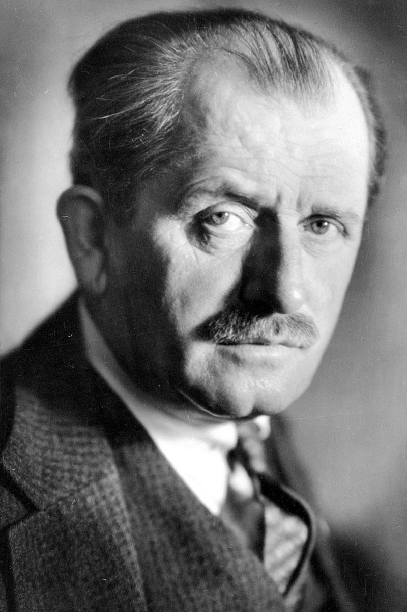
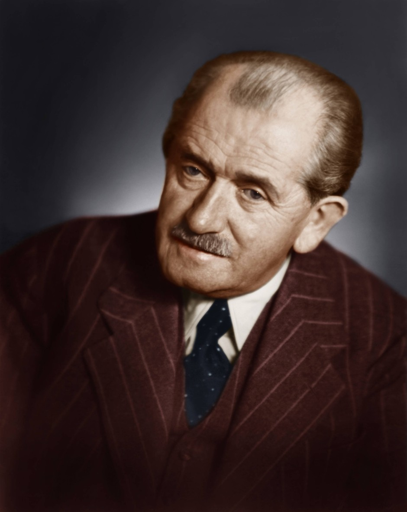

Specs and Features
In this page, you can check the specs and features of a selected porsche that you'll interested
Overview
Porsche is a German automotive manufacturer renowned for its luxury sports cars, SUVs, and sedans, with a strong emphasis on performance, precision engineering, and iconic design. Founded in 1931 by Ferdinand Porsche, the company initially offered consulting services for automotive engineering before producing its own vehicles. The first car to carry the Porsche name was the Porsche 356, which was introduced in 1948 by Ferdinand's son, Ferry Porsche. The Porsche 911, launched in 1964, became the brand's most iconic model and is still in production today, symbolizing Porsche’s commitment to engineering excellence and high-performance sports cars.
Porsche is known for pioneering several key automotive technologies, including advanced turbocharging, all-wheel-drive systems, and innovative lightweight materials such as carbon fiber. The brand has a reputation for blending everyday usability with extreme performance, offering a lineup that includes the 911, 718 Cayman, Panamera, Taycan, and Macan. The 911 remains the centerpiece of the brand, with various iterations like the GT3, Turbo, and Carrera catering to different types of driving enthusiasts. Porsche's success on the racetrack, particularly in endurance racing such as the 24 Hours of Le Mans, has bolstered its reputation for producing cars that excel both on and off the track.
In recent years, Porsche has expanded its lineup to include electric vehicles, with the Taycan being their first fully electric sports sedan, marking a major step toward the brand’s commitment to sustainability while maintaining high performance. Throughout its history, Porsche has been synonymous with driving pleasure, combining cutting-edge technology, iconic design, and an unwavering commitment to excellence in every model it produces.
Specifications
These are the Specifications of an selected cars that we introduced to you
So Lets talk first the Porsche 911 GTR 3 RS
Porsche 911 GTR 3 RS
The Porsche 911 GT3 RS (specifically the 992-generation model introduced in 2022) is a track-focused, high-performance version of the iconic 911. It is powered by a 4.0-liter naturally aspirated flat-six engine that produces 518 horsepower and 470 lb-ft of torque, enabling it to accelerate from 0-60 mph in just 3.0 seconds. The car is equipped with Porsche's seven-speed dual-clutch PDK transmission and features a rear-wheel-drive setup. With a top speed of around 193 mph, the GT3 RS is designed for exceptional track performance, thanks to advanced aerodynamics, including an active rear wing, larger front and rear fenders, and extensive use of lightweight materials such as carbon fiber. The car's suspension is race-derived, with dynamic dampers and rear-wheel steering for enhanced handling and stability at high speeds. Additionally, the GT3 RS boasts a lightweight construction, tipping the scales at just 3,153 pounds, further enhancing its agility and performance on the track. This combination of raw power, cutting-edge technology, and meticulous engineering makes the 992 GT3 RS one of the most capable and extreme road-going 911s ever produced.
Porsche 911 Turbo S
The Porsche 911 Turbo S (992-generation, introduced in 2020) is a high-performance version of the iconic 911, combining blistering speed with cutting-edge technology. It is powered by a 3.8-liter twin-turbocharged flat-six engine that produces an impressive 640 horsepower and 590 lb-ft of torque. This power enables the Turbo S to accelerate from 0-60 mph in just 2.6 seconds, making it one of the quickest production cars in the world. The engine is paired with an eight-speed dual-clutch PDK transmission and an advanced all-wheel-drive system, providing exceptional traction and handling in various conditions. The Turbo S has a top speed of around 205 mph and features active aerodynamics, including an adjustable rear spoiler and front air intakes, to optimize downforce and stability at high speeds. It also benefits from Porsche's Dynamic Chassis Control, rear-wheel steering, and carbon-ceramic brakes for superior handling and braking performance. Weighing in at approximately 3,600 pounds, the 911 Turbo S is a perfect blend of everyday usability and extreme performance, offering an exhilarating driving experience while maintaining Porsche’s signature luxury and refinement.
Porsche 911 Carrera S
The Porsche 911 Carrera S (992-generation, introduced in 2019) is a refined yet powerful variant of the iconic 911, offering a perfect balance of performance and everyday usability. It is powered by a 3.0-liter twin-turbocharged flat-six engine, producing 443 horsepower and 390 lb-ft of torque. This engine enables the Carrera S to accelerate from 0-60 mph in just 3.5 seconds, with a top speed of 191 mph. The Carrera S comes with an eight-speed dual-clutch PDK transmission, and it is available with both rear-wheel drive and all-wheel drive (Carrera 4S). The car features Porsche’s Active Suspension Management (PASM) system for enhanced ride comfort and handling, as well as Porsche’s Dynamic Chassis Control (PDCC) for improved stability and cornering performance. With its lightweight construction, advanced aerodynamics, and a focus on precision handling, the 911 Carrera S delivers an engaging driving experience that combines the thrill of a sports car with the practicality of a daily driver.
Features
And these are the features of an selected cars that we introduced to you
So Lets start with Porsche 911 GTR 3 RS
Porsche 911 GTR 3 RS
The Porsche 911 GT3 RS (992-generation) is packed with advanced features designed to enhance both track performance and driving dynamics. It boasts an aggressive design, highlighted by an active rear wing for adjustable downforce, larger front and rear fenders, and extensive use of lightweight materials like carbon fiber to reduce weight and increase rigidity. Powered by a 4.0-liter naturally aspirated flat-six engine producing 518 horsepower, the GT3 RS is equipped with Porsche's seven-speed dual-clutch PDK transmission, offering rapid gear shifts for optimal performance. The car features a sophisticated suspension system, including rear-wheel steering and adjustable dampers, for enhanced handling and stability. Additionally, the GT3 RS comes with carbon-ceramic brakes for exceptional stopping power and a race-ready interior, focused on driver engagement with sport bucket seats, a roll cage, and minimalistic controls to reduce weight. Advanced aerodynamics, including a front diffuser, air intakes, and the active rear wing, ensure optimal performance at high speeds. The combination of these features makes the GT3 RS one of the most track-focused and capable 911 models ever produced.
Porsche 911 Turbo S
The Porsche 911 Turbo S (992-generation) is equipped with a range of high-performance features that make it a top-tier sports car, blending power, precision, and technology. Powered by a 3.8-liter twin-turbocharged flat-six engine generating 640 horsepower and 590 lb-ft of torque, the Turbo S can accelerate from 0-60 mph in just 2.6 seconds. It features an eight-speed dual-clutch PDK transmission and Porsche's advanced all-wheel-drive system for superior traction and handling in various conditions. The car also boasts Porsche Active Aerodynamics (PAA), with an adjustable rear spoiler and dynamic front air intakes that optimize downforce and cooling. The Turbo S is equipped with Porsche Dynamic Chassis Control (PDCC), which reduces body roll and enhances stability during aggressive cornering, while rear-wheel steering improves maneuverability and handling at high speeds. Additionally, the car features carbon-ceramic brakes, providing exceptional stopping power, and a lightweight construction that enhances agility. Inside, the 911 Turbo S offers a luxurious and tech-packed cabin, with leather upholstery, advanced infotainment, and a high level of comfort, ensuring a premium driving experience both on the road and the track.
Porsche 911 Carrera S
The Porsche 911 Carrera S (992-generation) combines a thrilling performance with everyday usability, packed with advanced features for both driving enjoyment and comfort. It is powered by a 3.0-liter twin-turbocharged flat-six engine that delivers 443 horsepower and 390 lb-ft of torque, enabling it to accelerate from 0-60 mph in just 3.5 seconds. The Carrera S comes equipped with an eight-speed dual-clutch PDK transmission, which ensures fast and precise gear shifts. Its Porsche Active Suspension Management (PASM) system offers adaptive dampers for a smooth ride, while the optional rear-wheel drive or all-wheel-drive system (Carrera 4S) enhances stability and traction. The car also features Porsche Dynamic Chassis Control (PDCC), which reduces body roll and improves cornering performance. The Carrera S incorporates advanced aerodynamics, including an adjustable rear spoiler, and benefits from a lightweight construction, contributing to enhanced agility. Inside, the cabin is equipped with high-quality materials, a sophisticated infotainment system, and advanced driver assistance features, ensuring comfort and convenience. The combination of these features makes the 911 Carrera S a versatile and exhilarating sports car suitable for both daily driving and spirited road trips.
So here is a table to better understand the specs and features of the selected cars I introduced to you.
| Car models | Specs and Features | Price |
|---|---|---|
| 991.1 GT3 RS (2015-2016): | The 991.1 GT3 RS is powered by a 4.0-liter naturally aspirated flat-six engine producing 500 horsepower, accelerating from 0-100 km/h in 3.3 seconds, with a 7-speed PDK transmission and rear-wheel drive. The car is designed for track use, featuring aggressive aerodynamics, lightweight materials like carbon fiber and magnesium, and rear-wheel steering. | $130,000 - $150,000 |
| 991.2 GT3 RS (2018-2019): | The 991.2 GT3 RS increased power to 520 horsepower, maintaining its track-oriented setup while improving aerodynamics and handling with rear-wheel steering and lighter materials. It continues to provide exceptional driving dynamics, with a focus on precision and lightweight construction. | $175,000 - $185,000 |
| 991.1 Turbo S (2013-2016) | The 991.1 Turbo S is equipped with a 3.8-liter twin-turbocharged flat-six engine producing 560 horsepower and 710 Nm of torque. With all-wheel drive, rear-wheel steering, and advanced aerodynamics, the car accelerates from 0-100 km/h in 3.1 seconds. It offers a blend of extraordinary performance, dynamic handling, and luxurious features like carbon ceramic brakes and LED headlights. | $160,000 - $190,000 |
| 991.2 Turbo S (2016-2019) | The 991.2 Turbo S features a more powerful version of the 3.8-liter twin-turbo engine, delivering 580 horsepower and 700 Nm of torque. It accelerates from 0-100 km/h in just 2.9 seconds, making it one of the fastest production 911s. With enhanced technology, aerodynamics, and ride comfort, the Turbo S remains the ultimate everyday supercar, offering a seamless blend of performance and luxury. | $180,000 - $200,000 |
| 991.1 Carrera S (2012-2016) | The 991.1 Carrera S features a 3.8-liter naturally aspirated flat-six engine generating 400-420 horsepower, with a 0-100 km/h acceleration time of 4.3 seconds (with PDK). It comes with advanced features like PASM (Porsche Active Suspension Management) and PTV (Porsche Torque Vectoring), providing a balance between thrilling performance and everyday usability. | $90,000 - $105,000 |
| 991.2 Carrera S (2016-2019) | The 991.2 Carrera S switches to a turbocharged 3.0-liter flat-six engine, producing 420 horsepower and 500 Nm of torque, achieving 0-100 km/h in just 3.9 seconds. Despite the change to turbocharging, it retains the 911’s iconic handling characteristics and features a refined infotainment system, updated aerodynamics, and a more dynamic driving experience. | $160,000 - $190,000 |
And these are the example images of a Porsche cars

Founder of Company named "Porsche"
Ferdinand Porsche, born in 1875 in Maffersdorf (now in the Czech Republic), was a visionary automotive engineer whose innovations laid the foundation for one of the most iconic car brands in the world. After studying mechanical engineering, Porsche worked for several automotive companies, where he earned recognition for his pioneering designs, including the world’s first gasoline-electric hybrid vehicle, the Lohner-Porsche Mixte, in 1900. In 1931, he founded his own engineering consultancy, Porsche GmbH, which initially focused on designing vehicles for other manufacturers, most notably creating the Volkswagen Beetle at the request of Adolf Hitler. The Beetle’s success established Porsche as a leading figure in automotive design.
In 1948, after Ferdinand’s death, his son Ferry Porsche continued his legacy and led the creation of the first car to carry the Porsche name: the Porsche 356. Designed by Ferdinand’s former assistant, Erwin Komenda, the 356 marked the official birth of the Porsche brand. Under Ferry's leadership, the Porsche 911 followed, further cementing the company’s reputation for high-performance vehicles. Today, Porsche stands as a symbol of luxury, precision engineering, and innovation, with Ferdinand Porsche’s early contributions remaining central to its identity as a leading global car manufacturer. His work with Volkswagen and the creation of the Porsche 356 laid the groundwork for Porsche’s ongoing success in the automotive world.